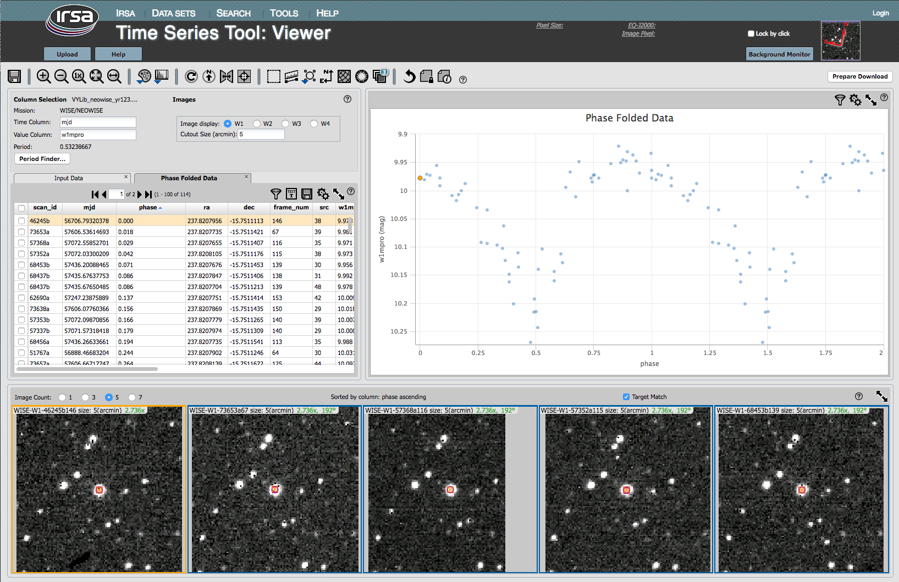

Time Series Tool: Main Screen, Viewer (After Period Finding)
Now you are back to the main screen, with settings, tables (now more
than one), plot, and images.

Contents of page/chapter:
+Settings
+Tables
+Plot
+Images
The settings shown in this pane reflect the earlier choices you made,
in the Viewer (initial screen).
Make changes here if you want to work with another band.
Note that if you have done calculations on, say, WISE-1, and change
the dependent column to WISE-2, the plot on the right will phase fold
the WISE-2 data to the period you have selected from the WISE-1
analysis.
Now the pane with the data table has two tables displayed. The time
series you have uploaded into the tool is one tab (as in the Viewer (initial screen)), and the other tab is
the phase folded time series (based on the P you selected in period finding).
The phase-folded table comes up, by default, in the foreground, and sorted
by phase. The images at the bottom are also
sorted by phase.
On the upper right, instead of the input light curve you have loaded
into the tool (dependent variable against time) as you had originally, now it is the phased time
series.
Note that if you have done calculations on, say, WISE-1, and change
the dependent column to WISE-2 in the settings pane on the left, the
plot will phase fold the WISE-2 data to the period you have selected
from the WISE-1 analysis.
If you have been working with a WISE time series, just as you had originally, on the bottom of the
screen there is a set of 5 images. Because the table in the foreground is the phase-folded time
series, with the table sorted in order of phase, the images are now
also sorted in order of phase.
Everything is still dynamically linked. Click on a
row of the table, and the images (and plot) change; click on a point
in the plot, and images (and table) change.
Go back to Period Finder or
go on to Saving Results.